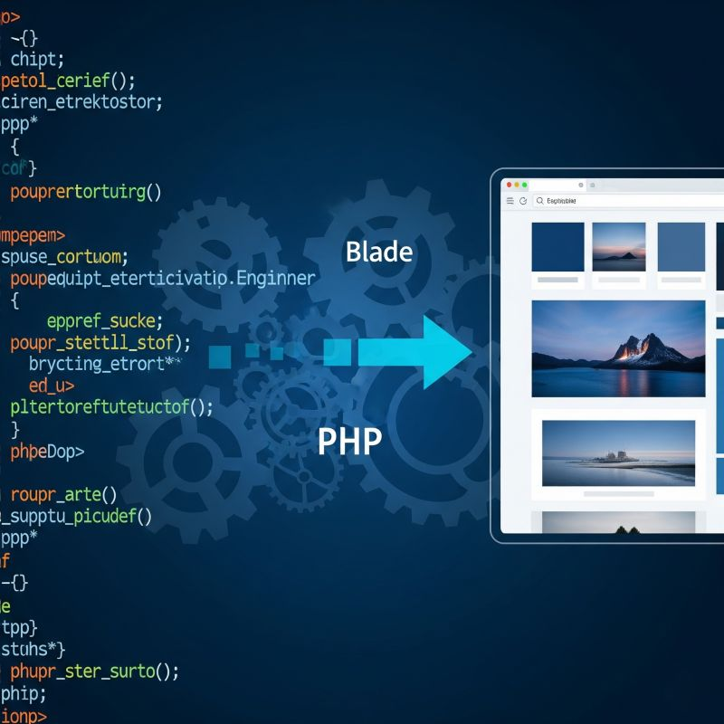

يا جماعة الخير، وخصوصي جماعة الـ PHP الفنانين!
الواحد وهو بقلّب هيك بأرشيف النت، وقعت عيني على نقاش قديم شوي على Reddit (إشي قبل 10 سنين تقريبًا!) عن
باكيدج للـ PHP بتسهّل شغل الـ Views والـ Templating، بتستخدم طريقة "Blade" المعروفة والـ Model-Driven
Approach.
بهداك الوقت، وقبل ما Laravel يفوت السوق بقوة ومعه Blade كإشي أساسي، فكرة إنك تفصل الـ View عن الـ Logic،
وتخلي كود الواجهات نظيف ومرتب، وكمان تربطه بالـ Models تبعتك بشكل مباشر وسهل، هاي كانت زي الحلم إلنا. البوست
هداك كان بحكي كيف ممكن نعمل هالإشي ببساطة.
طيب شو القصة اللي ممكن نتعلمها اليوم من "باكيدج" عمرها عقد من الزمن؟ 🤔
أساسيات الشغل النظيف ما بتتغيرش: فكرة إنه الكود تبعك يكون مرتب، وكل إشي بمحله الصح (يعني فصل المهام -
Separation of Concerns)، وإنه الـ View عندك تكون بس "بتعرض" الـ Data اللي جايياها من الـ Model بدون لوجيك
معجّج، هادي أساسيات شغل برمجة صح، زمان وهلقيت ولبعدين.
حلاوة الـ Templating Engines زي Blade: اللي اشتغلوا PHP زمان قبل ما تطلع هالـ Templating Engines الجديدة،
متذكرين وجعة الراس مع الـ echo والـ HTML اللي معجّج جوا كود الـ PHP. أدوات زي Blade (سواء جوا Laravel أو
كمفهوم) عملت نقلة نوعية بالسهولة والنظافة. يا دوب شوية syntax خفيف نظيف، وبتلاقي حالك بتبني واجهات ديناميكية
آخر حلاوة.
الـ Model-Driven Approach هادا كنز: لما الـ View تبعتك بتاخذ الـ Data تبعتها جاهزة ومزبطة من الـ Model،
حياتك كمبرمج بتصير أسهل بكثير. بتقلل الأغلاط، بتخلي التعديلات أسرع، وبتخليك تركز كيف تعرض المعلومة صح بدل ما
تقعد تلف وتدور عشان تجيبها.
التطور رحلة ما بتوقفش: يمكن الباكيدج هاي بالذات ما عادتش مستخدمة بنفس الاسم هلقيت، بس الأفكار اللي وراها هي
اللي بنت عليها Frameworks قوية زي Laravel وغيرها. هاد بفرجينا إنه الأفكار المنيحة بتضل وبتتطور.
الخلاصة من هالحكي كله إيش؟💡
حتى لو التكنولوجيا بتتغير بسرعة البرق، والمكتبات والـ Frameworks بتطلع كل يوم، فيه مفاهيم أساسية بتضل هي هي.
إنك تكتب كود نظيف، سهل للصيانة، وبخلي حياتك (وحياة اللي بده يشتغل بعدك) أسهل، هاد هدف المفروض كلنا نسعى إلو.
والحلو إنه الأفكار اللي كانت تبين "متقدمة" أو "بتحل أزمة" زمان، صارت هلقيت هي الـ Standard اللي بنتعلمه
وبنشتغل فيه.
جميع المقالات
كنوز الماضي بعدها بتفيدنا لـ هلقيت!
برمجة
22/06/2025
